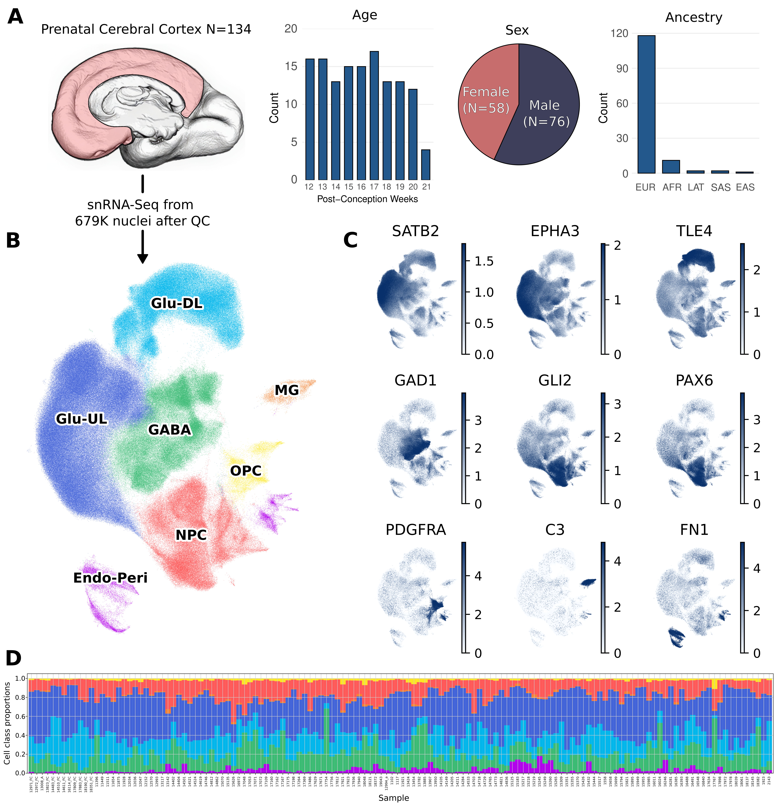

Project Overview
A single-cell eQTL atlas of the developing human brain
Genetic influences on gene expression in the developing brain likely contribute to susceptibility to neuropsychiatric disorders. Prior eQTL studies of the prenatal human brain have relied on bulk tissue, averaging expression signals across all constituent cell types and masking the underlying cellular heterogeneity. Here, we performed single-nucleus RNA sequencing (snRNA-seq) and genome-wide genotyping on cerebral cortex from 134 unrelated samples from the second trimester of gestation to generate the first single-nucleus eQTL atlas of the prenatal human brain.
We identify 3,121 unique eGenes across 7 major cell types and 13 of their subtypes. Combining these data with large-scale GWAS for six neuropsychiatric disorders, we implicate specific cell populations of the developing brain in disease aetiology and identify gene expression differences within them that credibly confer susceptibility.

Data Engineering Architecture
This project processes ~20 TB of raw genomic data through a suite of 13 interoperable Snakemake pipelines, orchestrated on a SLURM HPC cluster. The platform was designed from the ground up for scalability, reproducibility, and collaborative reuse.
Workflow Orchestration
All pipelines are managed by Snakemake (v8.x) with a dedicated SLURM cluster profile, allowing up to 500 concurrent jobs across a dedicated compute partition (c_compute_neuro1, account scw1641). The profile handles automatic job submission, logging, and resource allocation per rule:
# config/profile/config.yaml (excerpt)
executor: cluster-generic
jobs: 500
use-conda: true
use-singularity: true
cluster-generic-submit-cmd: >
sbatch
--ntasks={resources.ntasks}
--mem={resources.mem_mb}
--time={resources.time}
--cpus-per-task={resources.threads}
--account=scw1641
--partition=c_compute_neuro1The pipeline is launched via a single shell script that captures the full Snakemake log and emails on completion:
# workflow/snakemake.sh
snakemake --profile ../config/profile/ $@ 2> smk-"`date +"%d-%m-%Y"`.log
mail -s "Snakemake has finished" camerond@cardiff.ac.uk < smk-"`date +"%d-%m-%Y"`.logCentralised Configuration
All parameters, file paths, tool settings, container paths, GWAS URLs, and cell-type lists are managed in a single config/config.yaml. This means the entire platform can be reconfigured for a new dataset by editing one file — no hardcoded paths in any script or rule.
Key config-driven components include:
- Cell types (20 entries: 7 broad + 12 subtypes) — propagated automatically to TensorQTL, SuSiE, S-LDSR, SMR, and TWAS rules via Snakemake wildcards
- GWAS URLs — six neuropsychiatric GWAS (SCZ, BPD, MDD, ADHD, OCD) downloaded directly from Figshare/PGC by the pipeline
- Container paths — eight Singularity containers mapped centrally, ensuring every rule uses the correct software environment
- Analysis parameters — SuSiE window (1 Mb), batch count (25), FDR threshold (0.05), TensorQTL permutation bounds, SMR windows, all in one place
Data Ingestion: JSON-driven FASTQ Management
Raw sequencing data from three plates (150 samples, 43 sublibraries) are spread across multiple sequencing runs and lanes on network-attached storage. Rather than hardcoding paths, we use a custom Python script (workflow/scripts/create_parse_json.py) to crawl FASTQ directories, match files by sample and read orientation using regex, sort across lanes and runs, and serialise the result to a JSON manifest:
# Matches filename pattern: 10_S8_L001_R1_001.fastq.gz
m = re.search(r'(\d+)_S\d+_(L\d{3})_(R\d)', file)
if m:
sample, lane, reads = m.group(1), m.group(2), m.group(3)
FILES[sample][reads].append(full_path)The resulting JSON (e.g. config/samples_plate3.json) maps each sample ID to its full list of R1 and R2 FASTQ paths across all lanes and runs. Snakemake ingests this at runtime via a lambda wildcard function, allowing it to concatenate the correct files for each sample dynamically:
rule cat_fqs:
input:
r1 = lambda wildcards: MERGE_FQ[wildcards.sample]['R1'],
r2 = lambda wildcards: MERGE_FQ[wildcards.sample]['R2']A parallel JSON (config/bam_files.json) maps sample IDs to their processed BAM file paths for downstream genotype-aware steps (cellSNP-lite, Vireo donor deconvolution).
Reproducible Environments
Software reproducibility is enforced at two layers:
Conda environments with fully pinned dependencies are used for Python-based pipelines (Scanpy, TensorQTL). The eqtl_study.yml environment pins every package to an exact build hash, ensuring bit-for-bit reproducibility across HPC nodes and future reruns.
Singularity containers are used for R-based and specialist tools where conda environments are insufficient. Eight containers are defined in config.yaml:
| Container | Purpose |
|---|---|
tensorqtl.sif |
GPU-accelerated eQTL mapping (PyTorch) |
r_eqtl.sif |
Core R analysis environment |
susier_v24.01.1.sif |
SuSiE fine-mapping |
seurat5f.sif |
Seurat 5 / general R |
twas.sif |
FUSION TWAS weight computation |
gtex_eqtl.sif |
FastQTL / GTEx tools |
genotype-qc2hrc_latest.sif |
Genotype QC and TOPMED imputation prep |
ubuntu_22.04.sif |
Lightweight shell utility container |
GPU-accelerated eQTL Mapping
TensorQTL (PyTorch backend) is used for cis eQTL mapping, enabling GPU-parallelised permutation testing across all 19 cell types. Four mapping modes are run per cell type: nominal, permutation, independent, and trans. Output is stored in Parquet format for efficient downstream parsing.
Automated Documentation
Pipeline documentation (this site) is built with Quarto and published automatically to GitHub Pages via a GitHub Actions workflow on every push to main:
# .github/workflows/publish.yml
- name: Render and Publish
uses: quarto-dev/quarto-actions/publish@v2
with:
target: gh-pagesPipeline Overview
The 13 pipelines run in a defined order, passing outputs directly between stages:
| # | Pipeline | Input | Output |
|---|---|---|---|
| 01 | Parse Alignment | Raw FASTQs | Per-plate DGE matrices (H5AD) |
| 02 | Scanpy | H5AD matrices | Annotated clusters, pseudobulk counts |
| 03 | Genotypes (pre-imputation) | Raw PLINK files (hg19) | TOPMED-ready VCFs (hg38) |
| 04 | Genotypes (post-imputation) | Imputed VCFs | Filtered, annotated, indexed VCF |
| 05 | TensorQTL | Pseudobulk counts + VCF | cis eQTL results (nominal, perm, indep, trans) |
| 06 | eQTL Replication | eQTL results | π₁ enrichment vs. 4 public datasets |
| 07 | Prep GWAS | PGC summary statistics | Munged, lifted, harmonised GWAS files |
| 08 | SuSiE Fine-mapping | eQTL + VCF | Credible sets, MaxCPP / CS95 annotations |
| 09 | S-LDSR | Fine-mapped eQTLs + GWAS | Partitioned heritability results |
| 10 | SMR | eQTL summary stats + GWAS | Colocalisation results |
| 11 | TWAS Weights | Pseudobulk counts + genotypes | FUSION weight files per gene/cell type |
| 12 | cTWAS | TWAS weights + GWAS | Causal TWAS results |
| 13 | Visualisation | All upstream results | Manuscript figures and tables |
Repository
Full source code, configuration, and documentation are available at: github.com/Dazcam/eQTL_study_2025